State Variables
System Modeling and Control · Chapter 14
Contents
Statespace Form
Transfer Function to Statespace
Laplace Transform of the Statespace Equations
Fundamental and Exponential Matrices
Consider a mass–spring-damper system.

Equations of motion: \[m\frac{d^{2}y}{dt^{2}}=-ky-b\frac{dy}{dt}+u(t).\] Let \[\begin{aligned} x_{1} &=&y \\ x_{2} &=&\dot{y} \end{aligned}\] so that \[\begin{aligned} \frac{dx_{1}}{dt} &=&x_{2} \\ \frac{dx_{2}}{dt} &=&-\frac{k}{m}x_{1}-\frac{b}{m}x_{2}+\frac{1}{m}u. \end{aligned}\] This is called the statespace form.
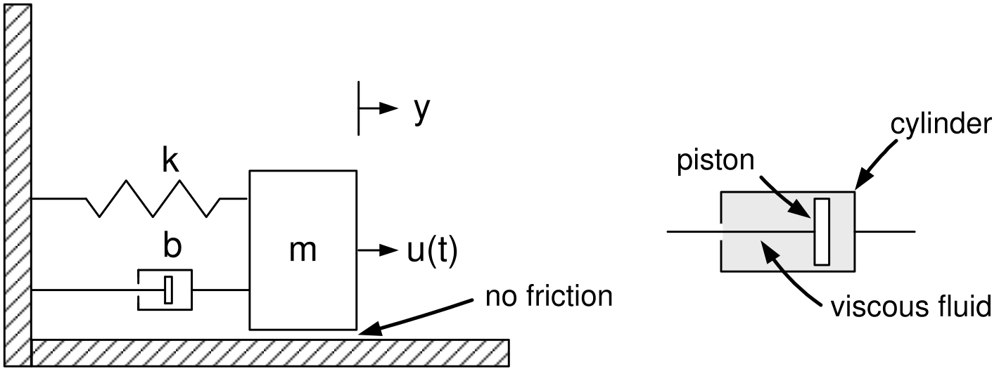
\[\begin{aligned} \frac{dx_{1}}{dt} &=&x_{2} \\ \frac{dx_{2}}{dt} &=&-\frac{k}{m}x_{1}-\frac{b}{m}x_{2}+\frac{1}{m}u. \end{aligned}\]
Statespace form
Left-side of the equation has only first-order derivatives.
Right-side has no derivatives.
As these equations are linear, we can write them in matrix form as \[\frac{d}{dt}\left[ \begin{array}{c} x_{1} \\ x_{2} \end{array} \right] =\underset{A}{\underbrace{\left[ \begin{array}{cc} 0 & 1 \\ -k/m & -b/m \end{array} \right] }}\underset{x}{\underbrace{\left[ \begin{array}{c} x_{1} \\ x_{2} \end{array} \right] }}+\underset{b}{\underbrace{\left[ \begin{array}{c} 0 \\ 1/m \end{array} \right] }}u\]
The output equation is \(y=x_{1}.\) \[\begin{aligned} \frac{d}{dt}\left[ \begin{array}{c} x_{1} \\ x_{2} \end{array} \right] &=&\underset{A}{\underbrace{\left[ \begin{array}{cc} 0 & 1 \\ -k/m & -b/m \end{array} \right] }}\underset{x}{\underbrace{\left[ \begin{array}{c} x_{1} \\ x_{2} \end{array} \right] }}+\underset{b}{\underbrace{\left[ \begin{array}{c} 0 \\ 1/m \end{array} \right] }}u \\ y &=&\underset{c}{\underbrace{\left[ \begin{array}{cc} 1 & 0 \end{array} \right] }}\left[ \begin{array}{c} x_{1} \\ x_{2} \end{array} \right] \end{aligned}\] More compactly we write \[\begin{aligned} \frac{dx}{dt} &=&Ax+bu \\ y &=&cx. \end{aligned}\] The quantities \(x_{1}\) and \(x_{2}\) are called the state variables and \[x\triangleq \left[ \begin{array}{c} x_{1} \\ x_{2} \end{array} \right]\] is called the state of the system.
DC Motor
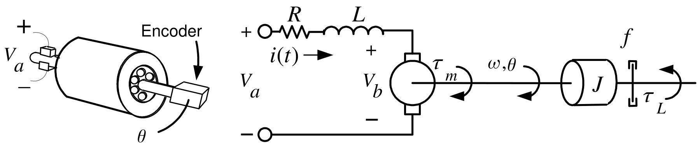
Equations of motion: \[\begin{aligned} V_{a} &=&Ri+L\frac{di}{dt}+V_{b},\text{ }V_{b}=K_{b}\omega \\ J\frac{d\omega }{dt} &=&\tau _{m}-f\omega -\tau _{L},\text{ }\tau _{m}=K_{T}i \\ \frac{d\theta }{dt} &=&\omega \end{aligned}\] or \[\begin{aligned} L\frac{di}{dt} &=&-Ri-K_{b}\omega +V_{a} \\ J\frac{d\omega }{dt} &=&K_{T}i-f\omega -\tau _{L} \\ \frac{d\theta }{dt} &=&\omega . \end{aligned}\]
DC Motor (continued)

Rewrite \[\begin{aligned} L\frac{di}{dt} &=&-Ri-K_{b}\omega +V_{a} \\ J\frac{d\omega }{dt} &=&K_{T}i-f\omega -\tau _{L} \\ \frac{d\theta }{dt} &=&\omega \end{aligned}\] in statespace form as \[\begin{aligned} \frac{di}{dt} &=&-\frac{R}{L}i-\frac{K_{b}}{L}\omega +\frac{1}{L}V_{a} \\ \frac{d\omega }{dt} &=&\frac{K_{T}}{J}i-\frac{f}{J}\omega -\frac{1}{J}\tau _{L} \\ \frac{d\theta }{dt} &=&\omega . \end{aligned}\]
DC Motor (continued)

Matrix notation: \[\frac{d}{dt}\left[ \begin{array}{c} i \\ \omega \\ \theta \end{array} \right] =\underset{A}{\underbrace{\left[ \begin{array}{ccc} -R/L & -K_{b}/L & 0 \\ K_{T}/J & -f/J & 0 \\ 0 & 1 & 0 \end{array} \right] }}\underset{x}{\underbrace{\left[ \begin{array}{c} i \\ \omega \\ \theta \end{array} \right] }}+\underset{b}{\underbrace{\left[ \begin{array}{c} 1/L \\ 0 \\ 0 \end{array} \right] }}V_{a}+\underset{p}{\underbrace{\left[ \begin{array}{c} 0 \\ -1/J \\ 0 \end{array} \right] }}\tau _{L}.\]
Control input is \(u\triangleq V_{a}.\)
Disturbance input is \(\tau _{L}.\)
State variables are \(i,\omega ,\theta .\)
System state is \(x\triangleq \left[ \begin{array}{c} i \\ \omega \\ \theta \end{array} \right] \!.\)
In compact notation: \[\frac{d}{dt}x=Ax+bu+p\tau _{L}.\]
\[G(s)=\frac{Y(s)}{U(s)}=\frac{1}{s^{2}+3s+2}.\] Clearing fractions \[(s^{2}+3s+2)Y(s)=U(s)\] so that in the time domain \[\frac{d^{2}y}{dt^{2}}+3\frac{dy}{dt}+2y=u(t).\]
- This is referred to as an input-output representation.
Let \[\begin{aligned} x_{1} &=&y \\ x_{2} &=&\dot{y} \end{aligned}\] to obtain the statespace form \[\begin{aligned} dx_{1}/dt &=&x_{2} \\ dx_{2}/dt &=&-2x_{1}-3x_{2}+u \\ y &=&x_{1}. \end{aligned}\]
The statespace model \[\begin{aligned} dx_{1}/dt &=&x_{2} \\ dx_{2}/dt &=&-2x_{1}-3x_{2}+u \\ y &=&x_{1}. \end{aligned}\] is equivalent to the block diagram
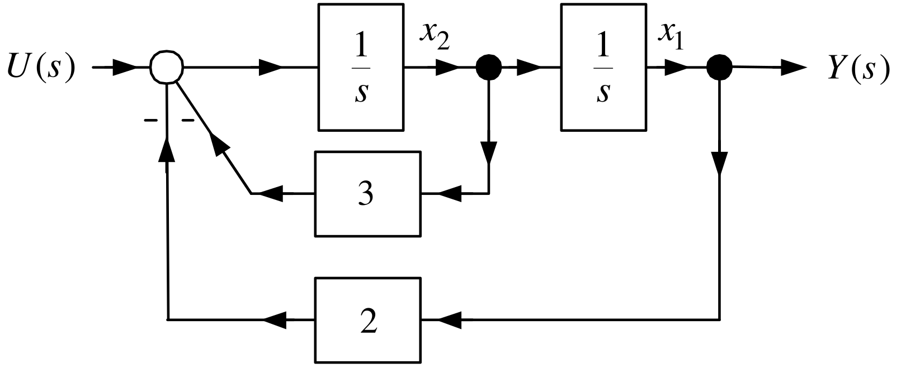
The state variables \(x_{1},x_{2}\) are the outputs of the integrators.
In matrix notation: \[\begin{aligned} \frac{d}{dt}\left[ \begin{array}{c} x_{1} \\ x_{2} \end{array} \right] &=&\underset{A}{\underbrace{\left[ \begin{array}{rr} 0 & 1 \\ -2 & -3 \end{array} \right] }}\underset{x}{\underbrace{\left[ \begin{array}{c} x_{1} \\ x_{2} \end{array} \right] }}+\underset{b}{\underbrace{\left[ \begin{array}{c} 0 \\ 1 \end{array} \right] }}u \\ y &=&\underset{c}{\underbrace{\left[ \begin{array}{cc} 1 & 0 \end{array} \right] }}\left[ \begin{array}{c} x_{1} \\ x_{2} \end{array} \right] \!. \end{aligned}\]
Now let \[G(s)=\frac{Y(s)}{U(s)}\triangleq \frac{s+1}{s^{2}+3s+2}.\]
Clearing fractions \[(s^{2}+3s+2)Y(s)=(s+1)U(s)\] or in the time domain \[\frac{d^{2}y}{dt^{2}}+3\frac{dy}{dt}+2y=u(t)+\frac{du}{dt}.\]
If we let \(x_{1}=y\) and \(x_{2}=\dot{y}\) we end up with \[\begin{aligned} \frac{dx_{1}}{dt} &=&x_{2} \\ \frac{dx_{2}}{dt} &=&-2x_{1}-3x_{2}+u+\frac{du}{dt} \\ y &=&x_{1}. \end{aligned}\] In matrix form: \[\begin{aligned} \frac{d}{dt}\left[ \begin{array}{c} x_{1} \\ x_{2} \end{array} \right] &=&\left[ \begin{array}{rr} 0 & 1 \\ -2 & -3 \end{array} \right] \left[ \begin{array}{c} x_{1} \\ x_{2} \end{array} \right] +\left[ \begin{array}{c} 0 \\ 1 \end{array} \right] u+\left[ \begin{array}{c} 0 \\ 1 \end{array} \right] \frac{du}{dt} \\ y &=&\left[ \begin{array}{cc} 1 & 0 \end{array} \right] \left[ \begin{array}{c} x_{1} \\ x_{2} \end{array} \right] . \end{aligned}\]
- This is not in statespace form due to the \(\dfrac{du}{dt}\) on the right-hand side.
Consider transfer function \[G(s)=\frac{Y(s)}{U(s)}=\frac{b_{2}s^{2}+b_{1}s+b_{0}}{ s^{3}+a_{2}s^{2}+a_{1}s+a_{0}}.\]
Let \[\frac{X_{1}(s)}{U(s)}\triangleq \frac{1}{s^{3}+a_{2}s^{2}+a_{1}s+a_{0}}.\]
Draw the simulation diagram for \(X_{1}(s)/U(s).\)
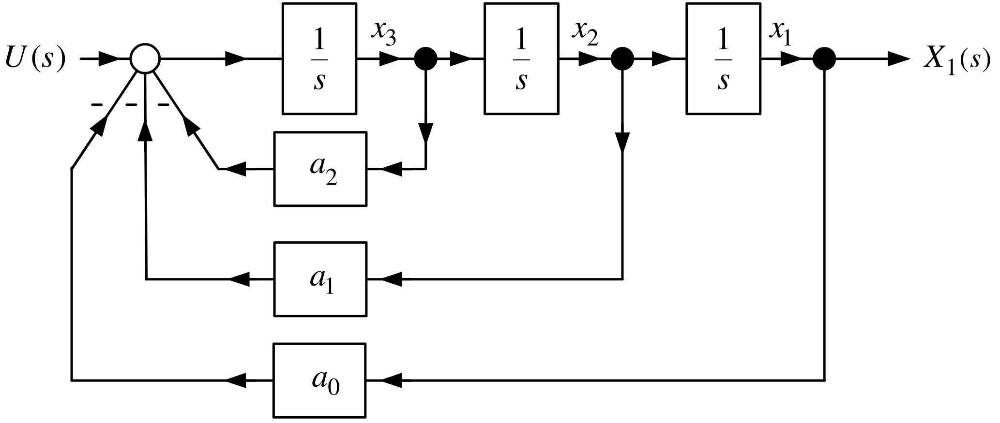
Some block diagram reduction shows \(X_{1}(s)/U(s)=\dfrac{1}{ s^{3}+a_{2}s^{2}+a_{1}s+a_{0}}.\)
\(X_{1}(s)=\dfrac{1}{s}X_{2}(s)\Longrightarrow X_{2}(s)=sX_{1}(s)\) and \(X_{2}(s)=\dfrac{1}{s}X_{3}(s)\Longrightarrow X_{3}(s)=sX_{2}(s)=s^{2}X_{1}(s)\)
From previous slide: \(X_{2}(s)=sX_{1}(s),\) \(X_{3}(s)=sX_{2}(s)=s^{2}X_{1}(s).\)
As \[X_{1}(s)\triangleq \frac{1}{s^{3}+a_{2}s^{2}+a_{1}s+a_{0}}U(s)\]
and \[Y(s)=\left( b_{2}s^{2}+b_{1}s+b_{0}\right) X_{1}(s)=\frac{ b_{2}s^{2}+b_{1}s+b_{0}}{s^{3}+a_{2}s^{2}+a_{1}s+a_{0}}U(s)\] we have \[Y(s)=b_{2}s^{2}X_{1}(s)+b_{1}sX_{1}(s)+b_{0}X_{1}(s)=b_{2}X_{3}(s)+b_{1}X_{2}(s)+b_{0}X_{1}(s).\]

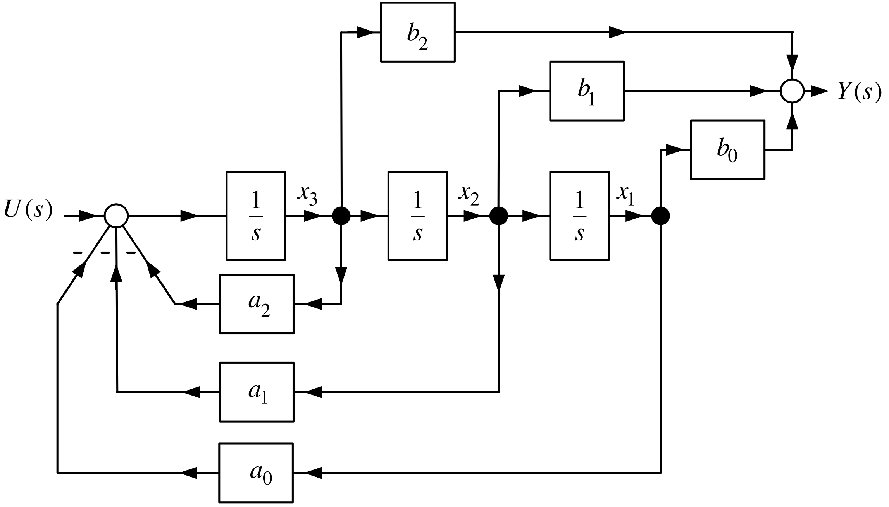
From the simulation diagram we have \[\begin{aligned} \frac{dx_{1}}{dt} &=&x_{2} \\ \frac{dx_{2}}{dt} &=&x_{3} \\ \frac{dx_{3}}{dt} &=&-a_{0}x_{1}-a_{1}x_{2}-a_{2}x_{3}+u \\ y &=&b_{0}x_{1}+b_{1}x_{2}+b_{2}x_{3} \end{aligned}\]
\[\begin{aligned} \frac{dx_{1}}{dt} &=&x_{2} \\ \frac{dx_{2}}{dt} &=&x_{3} \\ \frac{dx_{3}}{dt} &=&-a_{0}x_{1}-a_{1}x_{2}-a_{2}x_{3}+u \\ y &=&b_{0}x_{1}+b_{1}x_{2}+b_{2}x_{3} \end{aligned}\] In matrix form \[\begin{aligned} \frac{d}{dt}\left[ \begin{array}{c} x_{1} \\ x_{2} \\ x_{3} \end{array} \right] &=&\underset{A}{\underbrace{\left[ \begin{array}{ccc} 0 & 1 & 0 \\ 0 & 0 & 1 \\ -a_{0} & -a_{1} & -a_{2} \end{array} \right] }}\underset{x}{\underbrace{\left[ \begin{array}{c} x_{1} \\ x_{2} \\ x_{3} \end{array} \right] }}+\underset{b}{\underbrace{\left[ \begin{array}{c} 0 \\ 0 \\ 1 \end{array} \right] }}u \\ y &=&\underset{c}{\underbrace{\left[ \begin{array}{ccc} b_{0} & b_{1} & b_{2} \end{array} \right] }}\left[ \begin{array}{c} x_{1} \\ x_{2} \\ x_{3} \end{array} \right] . \end{aligned}\]
This statespace representation is called a realization of \(G(s)\) .
This is because the statespace model can be implemented (realized) on a digital
computer.
The special form of the \(A\) and \(b\) matrices is the control canonical form.
Transfer Function Realization
Let \[\frac{Y(s)}{U(s)}=\frac{10s+8}{s^{2}+5s+6}\] and \[\frac{X_{1}(s)}{U(s)}=\frac{1}{s^{2}+5s+6}.\]
Draw the simulation diagram for \(X_{1}(s)/U(s).\)
Then use the outputs of the two integrators to form \[Y(s)=10sX_{1}(s)+8X_{1}(s).\]

Transfer Function Realization (continued)

\[\begin{aligned} \frac{dx_{1}}{dt} &=&x_{2} \\ \frac{dx_{2}}{dt} &=&-6x_{1}-5x_{2}+u \\ y &=&8x_{1}+10x_{2}. \end{aligned}\] \[\begin{aligned} \frac{d}{dt}\left[ \begin{array}{c} x_{1} \\ x_{2} \end{array} \right] &=&\underset{A}{\underbrace{\left[ \begin{array}{rr} 0 & 1 \\ -6 & -5 \end{array} \right] }}\underset{x}{\underbrace{\left[ \begin{array}{c} x_{1} \\ x_{2} \end{array} \right] }}+\underset{b}{\underbrace{\left[ \begin{array}{c} 0 \\ 1 \end{array} \right] }}u \\ y &=&\underset{c}{\underbrace{\left[ \begin{array}{cc} 8 & 10 \end{array} \right] }}\left[ \begin{array}{c} x_{1} \\ x_{2} \end{array} \right] \end{aligned}\]
Discrete -Time Implementation of a Transfer Function
\[\frac{d}{dt}\left[ \begin{array}{c} x_{1} \\ x_{2} \end{array} \right] =\underset{A}{\underbrace{\left[ \begin{array}{rr} 0 & 1 \\ -6 & -5 \end{array} \right] }}\underset{x}{\underbrace{\left[ \begin{array}{c} x_{1} \\ x_{2} \end{array} \right] }}+\underset{b}{\underbrace{\left[ \begin{array}{c} 0 \\ 1 \end{array} \right] }}u\]
The Euler approximation for the derivatives is \[\left[ \begin{array}{c} dx_{1}(t)/dt \\ \\ dx_{2}(t)/dt \end{array} \right] _{t=kT}\approx \frac{1}{T}\left[ \begin{array}{c} x_{1}((k+1)T)-x_{1}(kT) \\ \\ x_{2}((k+1)T)-x_{2}(kT) \end{array} \right] .\]
Then \[\begin{aligned} \frac{1}{T}\left( x((k+1)T)-x(kT)\right) &=&Ax(kT)+bu(kT) \\ \Longrightarrow \text{ }x((k+1)T) &=&\left( I_{2\times 2}+ TA\right) x(kT)+Tbu(kT). \end{aligned}\] More explicitly \[\begin{aligned} \left[ \begin{array}{c} x_{1}((k+1)T) \\ x_{2}((k+1)T) \end{array} \right] &=&\left( \left[ \begin{array}{rr} 1 & 0 \\ 0 & 1 \end{array} \right] +T\left[ \begin{array}{rr} 0 & 1 \\ -6 & -5 \end{array} \right] \right) \!\left[ \begin{array}{c} x_{1}(kT) \\ x_{2}(kT) \end{array} \right] +T\!\left[ \begin{array}{c} 0 \\ 1 \end{array} \right] \!u(kT) \\ y(kT) &=&\left[ \begin{array}{cc} 1 & 0 \end{array} \right] \left[ \begin{array}{c} x_{1}(kT) \\ x_{2}(kT) \end{array} \right] . \end{aligned}\]
- Simulink converts \(\dfrac{10s+8}{s^{2}+5s+6}\) into this recursive equation to run in software.
Block Diagram Reduction
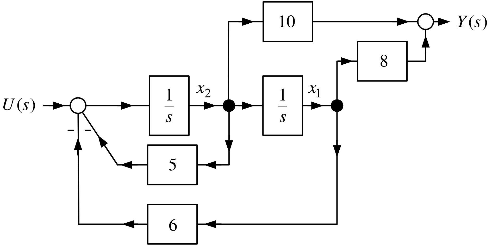
Take “ \(10\)” outside the feedback loop to obtain
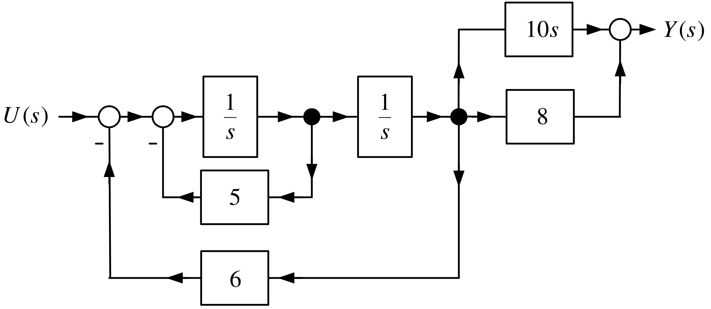
Block Diagram Reduction (continued)
From the previous slide

Simplify the inner feedback loop to obtain
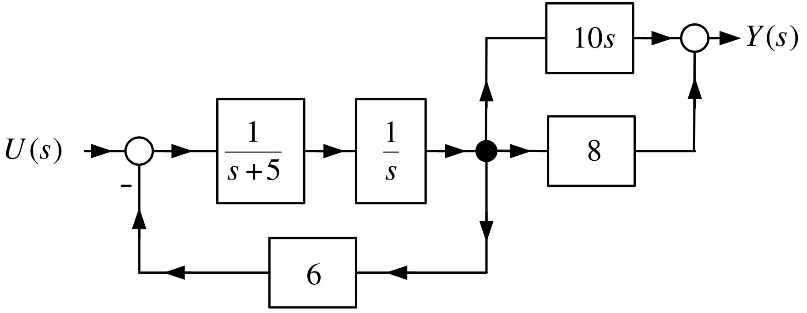
Block Diagram Reduction (continued)
From the previous slide

Simplify the feedback loop and the output.
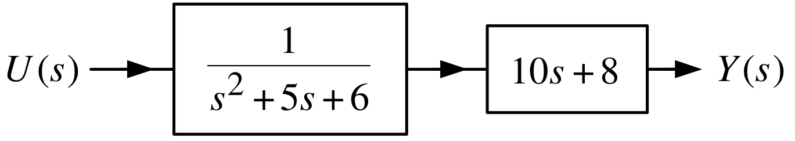
which shows \[\frac{Y(s)}{U(s)}=\dfrac{10s+8}{s^{2}+5s+6}.\]
Computation of the Inverse of a \(2\times 2\) Matrix
Let \[A=\left[ \begin{array}{rr} a & b \\ c & d \end{array} \right] .\] Assume \[\det A=\det \left[ \begin{array}{rr} a & b \\ c & d \end{array} \right] =ad-bc\neq 0.\] The inverse of \(A\) is \[A^{-1}=\frac{1}{\det A}\left[ \begin{array}{rr} d & -b \\ -c & a \end{array} \right] =\frac{1}{ad-bc}\left[ \begin{array}{rr} d & -b \\ -c & a \end{array} \right] .\] To check this we simply compute \[\begin{aligned} A^{-1}A=\frac{1}{ad-bc}\left[ \begin{array}{rr} d & -b \\ -c & a \end{array} \right] \left[ \begin{array}{rr} a & b \\ c & d \end{array} \right] &=&\frac{1}{ad-bc}\left[ \begin{array}{rr} ad-bc & db-bd \\ -ac+ac & -bc+ad \end{array} \right] \\ &=&\frac{1}{ad-bc}\left[ \begin{array}{cc} ad-bc & 0 \\ 0 & ad-bc \end{array} \right] \\ &=&\left[ \begin{array}{cc} 1 & 0 \\ 0 & 1 \end{array} \right] . \end{aligned}\] End of Digression
Consider \[\begin{aligned} \frac{d}{dt}\left[ \begin{array}{c} x_{1} \\ x_{2} \end{array} \right] &=&\left[ \begin{array}{rr} 0 & 1 \\ -6 & -5 \end{array} \right] \!\left[ \begin{array}{c} x_{1} \\ x_{2} \end{array} \right] +\left[ \begin{array}{c} 0 \\ 1 \end{array} \right] u \\ && \\ y &=&\left[ \begin{array}{cc} 8 & 10 \end{array} \right] \!\left[ \begin{array}{c} x_{1} \\ x_{2} \end{array} \right] . \end{aligned}\] By the Laplace transform \[\begin{aligned} \left[ \begin{array}{c} sX_{1}(s)-x_{1}(0) \\ sX_{2}(s)-x_{2}(0) \end{array} \right] &=&\left[ \begin{array}{rr} 0 & 1 \\ -6 & -5 \end{array} \right] \!\left[ \begin{array}{c} X_{1}(s) \\ X_{2}(s) \end{array} \right] +\left[ \begin{array}{c} 0 \\ 1 \end{array} \right] U(s) \\ && \\ Y(s) &=&\left[ \begin{array}{cc} 8 & 10 \end{array} \right] \!\left[ \begin{array}{c} X_{1}(s) \\ X_{2}(s) \end{array} \right] . \end{aligned}\] Let \(x_{1}(0)=x_{2}(0)=0\). \[\left( s\underset{I}{ \underbrace{\left[ \begin{array}{rr} 1 & 0 \\ 0 & 1 \end{array} \right] }}-\underset{A}{\underbrace{\left[ \begin{array}{rr} 0 & 1 \\ -6 & -5 \end{array} \right] }}\right) \!\left[ \begin{array}{c} X_{1}(s) \\ X_{2}(s) \end{array} \right] =\underset{b}{\underbrace{\left[ \begin{array}{c} 0 \\ 1 \end{array} \right] }}U(s)\]
\[\left( s\underset{I}{ \underbrace{\left[ \begin{array}{rr} 1 & 0 \\ 0 & 1 \end{array} \right] }}-\underset{A}{\underbrace{\left[ \begin{array}{rr} 0 & 1 \\ -6 & -5 \end{array} \right] }}\right) \!\left[ \begin{array}{c} X_{1}(s) \\ X_{2}(s) \end{array} \right] =\underset{b}{\underbrace{\left[ \begin{array}{c} 0 \\ 1 \end{array} \right] }}U(s).\]
Then \[\begin{aligned} \left[ \begin{array}{c} X_{1}(s) \\ X_{2}(s) \end{array} \right] &=&\underset{(sI-A)^{-1}}{\underbrace{\left( s\left[ \begin{array}{rr} 1 & 0 \\ 0 & 1 \end{array} \right] -\left[ \begin{array}{rr} 0 & 1 \\ -6 & -5 \end{array} \right] \right) ^{-1}}}\underset{b}{\underbrace{\left[ \begin{array}{c} 0 \\ 1 \end{array} \right] }}U(s) \\ && \\ &=&\left[ \begin{array}{cc} s & -1 \\ 6 & s+5 \end{array} \right] ^{-1}\left[ \begin{array}{c} 0 \\ 1 \end{array} \right] U(s) \\ && \\ &=&\frac{1}{s^{2}+5s+6}\left[ \begin{array}{cc} s+5 & 1 \\ -6 & s \end{array} \right] \left[ \begin{array}{c} 0 \\ 1 \end{array} \right] U(s) \\ && \\ &=&\frac{1}{s^{2}+5s+6}\left[ \begin{array}{c} 1 \\ s \end{array} \right] U(s). \end{aligned}\] Finally, \[Y(s)=\left[ \begin{array}{cc} 8 & 10 \end{array} \right] \!\left[ \begin{array}{c} X_{1}(s) \\ X_{2}(s) \end{array} \right] =\left[ \begin{array}{cc} 8 & 10 \end{array} \right] \frac{1}{s^{2}+5s+6}\left[ \begin{array}{c} 1 \\ s \end{array} \right] \!U(s)=\frac{8+10s}{s^{2}+5s+6}U(s).\]
Transfer Function Realization
\[G(s)=\frac{s^{2}+10s+5}{s^{2}+5s+6}\] This is proper, but not strictly proper. \[G(s)=\frac{s^{2}+5s+6-(5s+6)+10s+5}{s^{2}+5s+6}=\frac{s^{2}+5s+6+5s-1}{ s^{2}+5s+6}=1+\underset{G_{sp}}{\underbrace{\frac{5s-1}{s^{2}+5s+6}}}.\] We let \[G_{sp}(s)=\frac{Y_{sp}(s)}{U(s)}\triangleq \frac{5s-1}{s^{2}+5s+6}\] Do a realization of \(G_{sp}(s)\).

Transfer Function Realization (continued)
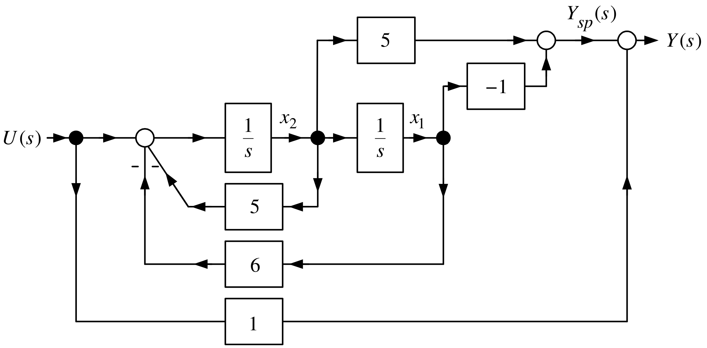
Including the feedforward signal from the input \(U(s)\) to the output \(Y(s)\): \[Y(s)=G_{sp}(s)U(s)+U(s).\]
Statespace Realization: \[\begin{aligned} \frac{dx_{1}}{dt} &=&x_{2} \\ \frac{dx_{2}}{dt} &=&-6x_{1}-5x_{2}+u \\ y &=&-x_{1}+5x_{2}+u \end{aligned}\]
Transfer Function Realization (continued)
From the previous slide: \[\begin{aligned} \frac{dx_{1}}{dt} &=&x_{2} \\ \frac{dx_{2}}{dt} &=&-6x_{1}-5x_{2}+u \\ y &=&-x_{1}+5x_{2}+u \end{aligned}\] In matrix form: \[\begin{aligned} \frac{d}{dt}\left[ \begin{array}{c} x_{1} \\ x_{2} \end{array} \right] &=&\left[ \begin{array}{rr} 0 & 1 \\ -6 & -5 \end{array} \right] \left[ \begin{array}{c} x_{1} \\ x_{2} \end{array} \right] +\left[ \begin{array}{c} 0 \\ 1 \end{array} \right] \!u \\ y &=&\left[ \begin{array}{cc} -1 & 5 \end{array} \right] \left[ \begin{array}{c} x_{1} \\ x_{2} \end{array} \right] +u. \end{aligned}\] Check: \[\begin{aligned} \left[ \begin{array}{c} sX_{1}(s)-\underset{0}{\underbrace{x_{1}(0)}} \\ sX_{2}(s)-\underset{0}{\underbrace{x_{2}(0)}} \end{array} \right] &=&\left[ \begin{array}{rr} 0 & 1 \\ -6 & -5 \end{array} \right] \left[ \begin{array}{c} X_{1}(s) \\ X_{2}(s) \end{array} \right] +\left[ \begin{array}{c} 0 \\ 1 \end{array} \right] \!U(s) \\ Y(s) &=&\left[ \begin{array}{cc} -1 & 5 \end{array} \right] \left[ \begin{array}{c} X_{1}(s) \\ X_{2}(s) \end{array} \right] +U(s). \end{aligned}\]
Transfer Function Realization (continued)
From the previous slide: \[\begin{aligned} \left[ \begin{array}{c} sX_{1}(s) \\ sX_{2}(s) \end{array} \right] &=&\left[ \begin{array}{rr} 0 & 1 \\ -6 & -5 \end{array} \right] \left[ \begin{array}{c} X_{1}(s) \\ X_{2}(s) \end{array} \right] +\left[ \begin{array}{c} 0 \\ 1 \end{array} \right] \!U(s) \\ Y(s) &=&\left[ \begin{array}{cc} -1 & 5 \end{array} \right] \left[ \begin{array}{c} X_{1}(s) \\ X_{2}(s) \end{array} \right] +U(s). \end{aligned}\] or \[\begin{aligned} \left[ \begin{array}{c} X_{1}(s) \\ X_{2}(s) \end{array} \right] &=&\left( s\left[ \begin{array}{rr} 1 & 0 \\ 0 & 1 \end{array} \right] -\left[ \begin{array}{rr} 0 & 1 \\ -6 & -5 \end{array} \right] \right) ^{-1}\left[ \begin{array}{c} 0 \\ 1 \end{array} \right] \!U(s) \\ &=&\frac{1}{s^{2}+5s+6}\left[ \begin{array}{c} 1 \\ s \end{array} \right] \!U(s). \end{aligned}\] so that \[\begin{aligned} Y(s)=\left[ \begin{array}{cc} -1 & 5 \end{array} \right] \left[ \begin{array}{c} X_{1}(s) \\ X_{2}(s) \end{array} \right] +U(s) &=&\left[ \begin{array}{cc} -1 & 5 \end{array} \right] \frac{1}{s^{2}+5s+6}\left[ \begin{array}{c} 1 \\ s \end{array} \right] \!U(s)+U(s) \\ &=&\frac{5s-1}{s^{2}+5s+6}U(s)+U(s) \\ &=&\frac{s^{2}+10s+5}{s^{2}+5s+6}U(s). \end{aligned}\]
Implementing a Feedback Controller
Consider the feedback system:
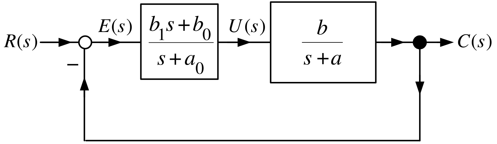
\(G_{c}(s)\) is proper, but not strictly proper. \[G_{c}(s)=\dfrac{b_{1}s+b_{0}}{s+a_{0}}=\dfrac{b_{1}(s+a_{0})-b_{1}a_{0}+b_{0} }{s+a_{0}}=b_{1}+\dfrac{b_{0}-b_{1}a_{0}}{s+a_{0}}\]
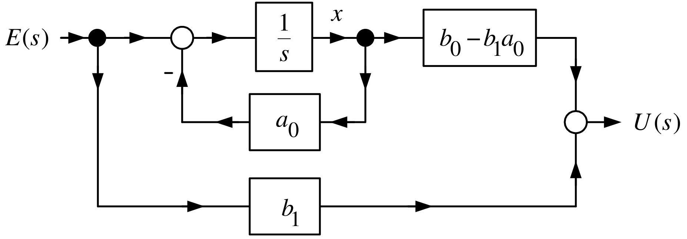
Statepace equations: \[\begin{aligned} \frac{dx(t)}{dt} &=&-a_{0}x(t)+e(t) \\ u(t) &=&(b_{0}-b_{1}a_{0})x(t)+b_{1}e(t) \\ e(t) &=&r(t)-c(t). \end{aligned}\]
Implementing a Feedback Controller (continued)
\[\begin{aligned} \frac{dx(t)}{dt} &=&-a_{0}x(t)+e(t) \\ u(t) &=&(b_{0}-b_{1}a_{0})x(t)+b_{1}e(t) \\ e(t) &=&r(t)-c(t). \end{aligned}\]
Convert to a discrete-time model to implement on a digital computer
Set \[\left. \frac{dx}{dt}\right\vert _{t=kT}\approx \frac{x((k+1)T)-x(kT)}{T}\] With \(t=kT\), the discrete-time model is \[\begin{aligned} x((k+1)T) &=&(1-a_{0}T)x(kT)+Te(kT) \\ u(kT) &=&(b_{0}-b_{1}a_{0})x(kT)+b_{1}e(kT) \\ e(kT) &=&r(kT)-c(kT). \end{aligned}\]
These recursive equations can be implemented in the \(C\) programming language.
The value of \(c(kT)\) comes from the output sensor
\(r(kT)\) is stored in the computer’s memory.
Implementing a Transfer Function
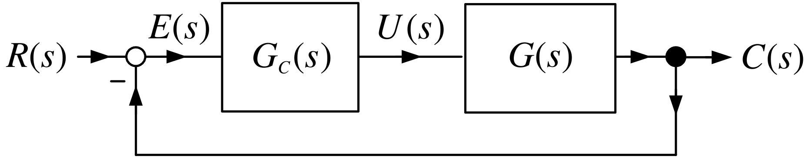
Let \[\frac{U(s)}{E(s)}=G_{c}(s)=\frac{b_{c2}s^{2}+b_{c1}s+b_{c0}}{ s^{3}+a_{c2}s^{2}+a_{c1}s+a_{c0}}.\] A state space realization of \(G_{c}(s)\) is given by \[\begin{aligned} \frac{d}{dt}\left[ \begin{array}{c} x_{1} \\ x_{2} \\ x_{3} \end{array} \right] &=&\underset{A_{c}}{\underbrace{\left[ \begin{array}{ccc} 0 & 1 & 0 \\ 0 & 0 & 1 \\ -a_{c0} & -a_{c1} & -a_{c2} \end{array} \right] }}\underset{x}{\underbrace{\left[ \begin{array}{c} x_{1} \\ x_{2} \\ x_{3} \end{array} \right] }}+\underset{b_{c}}{\underbrace{\left[ \begin{array}{c} 0 \\ 0 \\ 1 \end{array} \right] }}e \\ u &=&\underset{c_{c}}{\underbrace{\left[ \begin{array}{ccc} b_{c0} & b_{c1} & b_{c2} \end{array} \right] }}\left[ \begin{array}{c} x_{1} \\ x_{2} \\ x_{3} \end{array} \right] . \end{aligned}\]
Implementing a Transfer Function (continued)
\[\begin{aligned} \frac{d}{dt}\left[ \begin{array}{c} x_{1} \\ x_{2} \\ x_{3} \end{array} \right] &=&\underset{A_{c}}{\underbrace{\left[ \begin{array}{ccc} 0 & 1 & 0 \\ 0 & 0 & 1 \\ -a_{c0} & -a_{c1} & -a_{c2} \end{array} \right] }}\underset{x}{\underbrace{\left[ \begin{array}{c} x_{1} \\ x_{2} \\ x_{3} \end{array} \right] }}+\underset{b_{c}}{\underbrace{\left[ \begin{array}{c} 0 \\ 0 \\ 1 \end{array} \right] }}e \\ u &=&\underset{c_{c}}{\underbrace{\left[ \begin{array}{ccc} b_{c0} & b_{c1} & b_{c2} \end{array} \right] }}\left[ \begin{array}{c} x_{1} \\ x_{2} \\ x_{3} \end{array} \right] . \end{aligned}\]
Set \[\left[ \begin{array}{c} \dfrac{dx_{1}(kT)}{dt} \\ \\ \dfrac{dx_{2}(kT)}{dt} \\ \\ \dfrac{dx_{3}(kT)}{dt} \end{array} \right] \approx \left[ \begin{array}{c} \dfrac{x_{1}((k+1)T)-x_{1}(kT)}{T} \\ \\ \dfrac{x_{2}((k+1)T)-x_{2}(kT)}{T} \\ \\ \dfrac{x_{3}((k+1)T)-x_{3}(kT)}{T} \end{array} \right] .\] Then \[\!\!\!\!\!\frac{1}{T}\!\left( \!\left[ \! \begin{array}{c} x_{1}((k+1)T) \\ x_{2}((k+1)T) \\ x_{3}((k+1)T) \end{array} \!\right] \!-\!\left[ \! \begin{array}{c} x_{1}(kT) \\ x_{2}(kT) \\ x_{3}(kT) \end{array} \!\right] \!\right) \!=\!\left[ \!\! \begin{array}{ccc} 0 & 1 & 0 \\ 0 & 0 & 1 \\ -a_{c0} & -a_{c1} & -a_{c2} \end{array} \!\!\right] \!\!\!\left[ \! \begin{array}{c} x_{1}(kT) \\ x_{2}(kT) \\ x_{3}(kT) \end{array} \!\right] \!+\!\left[ \! \begin{array}{c} 0 \\ 0 \\ 1 \end{array} \!\right] \!\!e(kT)\!.\]
Implementing a Transfer Function (continued)
Rearrange \[\!\!\!\!\!\frac{1}{T}\!\left( \!\left[ \! \begin{array}{c} x_{1}((k+1)T) \\ x_{2}((k+1)T) \\ x_{3}((k+1)T) \end{array} \!\right] \!-\!\left[ \! \begin{array}{c} x_{1}(kT) \\ x_{2}(kT) \\ x_{3}(kT) \end{array} \!\right] \!\right) \!=\!\left[ \!\! \begin{array}{ccc} 0 & 1 & 0 \\ 0 & 0 & 1 \\ -a_{c0} & -a_{c1} & -a_{c2} \end{array} \!\!\right] \!\!\!\left[ \! \begin{array}{c} x_{1}(kT) \\ x_{2}(kT) \\ x_{3}(kT) \end{array} \!\right] \!+\!\left[ \! \begin{array}{c} 0 \\ 0 \\ 1 \end{array} \!\right] \!\!e(kT)\] to obtain \[\begin{aligned} \left[ \begin{array}{c} x_{1}((k+1)T) \\ x_{2}((k+1)T) \\ x_{3}((k+1)T) \end{array} \right] &=&\underset{I_{3\times 3}+TA_{c}}{\underbrace{\left[ \begin{array}{ccc} 1 & T & 0 \\ 0 & 1 & T \\ -Ta_{c0} & -Ta_{c1} & 1-Ta_{c2} \end{array} \right] }}\left[ \begin{array}{c} x_{1}(kT) \\ x_{2}(kT) \\ x_{3}(kT) \end{array} \right] +T\!\left[ \begin{array}{c} 0 \\ 0 \\ 1 \end{array} \right] \!e(kT) \\ u(kT) &=&\left[ \begin{array}{ccc} b_{c0} & b_{c1} & b_{c2} \end{array} \right] \left[ \begin{array}{c} x_{1}(kT) \\ x_{2}(kT) \\ x_{3}(kT) \end{array} \right] \\ e(kT) &=&r(kT)-y(kT). \end{aligned}\]
\(y(kT)\) is the measured output brought into the computer (e.g., an A/D, optical encoder, etc.).
\(r(kT)\) is stored in the computer memory.
This is a recursive algorithm implementable in software using \(C\).
Consider \[\frac{d}{dt}\left[ \begin{array}{c} x_{1} \\ x_{2} \end{array} \right] =\underset{A}{\underbrace{\left[ \begin{array}{rr} a_{11} & a_{12} \\ a_{21} & a_{22} \end{array} \right] }}\underset{x(t)}{\underbrace{\left[ \begin{array}{c} x_{1} \\ x_{2} \end{array} \right] }}+\underset{b}{\underbrace{\left[ \begin{array}{c} b_{1} \\ b_{2} \end{array} \right] }}u,\text{ }\left[ \begin{array}{c} x_{1}(0) \\ x_{2}(0) \end{array} \right] =\underset{x_{0}}{\underbrace{\left[ \begin{array}{c} x_{01} \\ x_{02} \end{array} \right] }}.\] Take the Laplace transform: \[\left[ \begin{array}{c} sX_{1}(s)-x_{1}(0) \\ sX_{2}(s)-x_{2}(0) \end{array} \right] =\left[ \begin{array}{rr} a_{11} & a_{12} \\ a_{21} & a_{22} \end{array} \right] \left[ \begin{array}{c} X_{1}(s) \\ X_{2}(s) \end{array} \right] +\left[ \begin{array}{c} b_{1} \\ b_{2} \end{array} \right] \!U(s)\] Rearrange: \[\underset{sI-A}{\underbrace{\left( s\left[ \begin{array}{rr} 1 & 0 \\ 0 & 1 \end{array} \right] -\left[ \begin{array}{rr} a_{11} & a_{12} \\ a_{21} & a_{22} \end{array} \right] \right) }}\underset{X(s)}{\underbrace{\left[ \begin{array}{c} X_{1}(s) \\ X_{2}(s) \end{array} \right] }}=\underset{x_{0}}{\underbrace{\left[ \begin{array}{c} x_{1}(0) \\ x_{2}(0) \end{array} \right] }}+\underset{b}{\underbrace{\left[ \begin{array}{c} b_{1} \\ b_{2} \end{array} \right] }}U(s)\] or \[\begin{aligned} \left[ \begin{array}{c} X_{1}(s) \\ X_{2}(s) \end{array} \right] &=&\left( s\left[ \begin{array}{rr} 1 & 0 \\ 0 & 1 \end{array} \right] -\left[ \begin{array}{rr} a_{11} & a_{12} \\ a_{21} & a_{22} \end{array} \right] \right) ^{-1}\left[ \begin{array}{c} x_{1}(0) \\ x_{2}(0) \end{array} \right] + \\ && \\ &&\left( s\left[ \begin{array}{rr} 1 & 0 \\ 0 & 1 \end{array} \right] -\left[ \begin{array}{rr} a_{11} & a_{12} \\ a_{21} & a_{22} \end{array} \right] \right) ^{-1}\left[ \begin{array}{c} b_{1} \\ b_{2} \end{array} \right] \!U(s). \end{aligned}\]
Recall \[\begin{aligned} \underset{(sI-A)^{-1}}{\underbrace{\left( s\left[ \begin{array}{rr} 1 & 0 \\ 0 & 1 \end{array} \right] -\left[ \begin{array}{rr} a_{11} & a_{12} \\ a_{21} & a_{22} \end{array} \right] \right) ^{-1}}} &=&\!\left[ \! \begin{array}{cc} s-a_{11} & -a_{12} \\ -a_{21} & s-a_{22} \end{array} \!\right] ^{-1}\!\! \\ &=&\frac{1}{\det (sI-A)}\!\left[ \! \begin{array}{cc} s-a_{22} & a_{12} \\ a_{21} & s-a_{11} \end{array} \!\right] \end{aligned}\] where \[\det (sI-A)=\det \left[ \begin{array}{cc} s-a_{11} & -a_{12} \\ -a_{21} & s-a_{22} \end{array} \right] =s^{2}+(-a_{11}-a_{22})s+a_{11}a_{22}-a_{12}a_{21}.\] Then \[\begin{aligned} \left[ \begin{array}{c} X_{1}(s) \\ X_{2}(s) \end{array} \right] &=&\left( s\left[ \begin{array}{rr} 1 & 0 \\ 0 & 1 \end{array} \right] -\left[ \begin{array}{rr} a_{11} & a_{12} \\ a_{21} & a_{22} \end{array} \right] \right) ^{-1}\left[ \begin{array}{c} x_{1}(0) \\ x_{2}(0) \end{array} \right] + \\ && \\ &&\left( s\left[ \begin{array}{rr} 1 & 0 \\ 0 & 1 \end{array} \right] -\left[ \begin{array}{rr} a_{11} & a_{12} \\ a_{21} & a_{22} \end{array} \right] \right) ^{-1}\left[ \begin{array}{c} b_{1} \\ b_{2} \end{array} \right] \!U(s) \end{aligned}\] is compactly written as \[X(s)=(sI-A)^{-1}x(0)+(sI-A)^{-1}bU(s).\]
Inverse LT of the Statespace Equations
Consider the statespace model \[\frac{d}{dt}\left[ \begin{array}{c} x_{1} \\ x_{2} \end{array} \right] =\left[ \begin{array}{rr} 0 & 2 \\ -2 & -5 \end{array} \right] \left[ \begin{array}{c} x_{1} \\ x_{2} \end{array} \right] +\left[ \begin{array}{c} 0 \\ 1 \end{array} \right] \!\!u.\] Then \[X(s)=\left[ \begin{array}{c} X_{1}(s) \\ X_{2}(s) \end{array} \right] =(sI-A)^{-1}x(0)+(sI-A)^{-1}bU(s).\] Now as \[(sI-A)^{-1}=\left[ \begin{array}{cc} s & -2 \\ 2 & s+5 \end{array} \right] ^{-1}=\frac{1}{\underset{\det (sI-A)}{\underbrace{(s+5)s+4}}}\left[ \begin{array}{cc} s+5 & 2 \\ -2 & s \end{array} \right] =\dfrac{1}{\underset{(s+4)(s+1)}{\underbrace{s^{2}+5s+4}}}\left[ \begin{array}{cc} s+5 & 2 \\ -2 & s \end{array} \right]\] we have \[\mathcal{L} ^{-1}\{(sI-A)^{-1}\}=\left[ \begin{array}{cc} \mathcal{L} ^{-1}\left\{ \dfrac{s+5}{(s+4)(s+1)}\right\} & \mathcal{L} ^{-1}\left\{ \dfrac{2}{(s+4)(s+1)}\right\} \\ & \\ \mathcal{L} ^{-1}\left\{ -\dfrac{2}{(s+4)(s+1)}\right\} & \mathcal{L} ^{-1}\left\{ \dfrac{s}{(s+4)(s+1)}\right\} \end{array} \right] \!.\]
Inverse LT of the Statespace Equations (continued)
Partial fraction expansion: \[\begin{aligned} \dfrac{s+5}{(s+4)(s+1)} &=&\frac{A}{s+4}+\frac{B}{s+1}=-\frac{1/3}{s+4}+ \frac{4/3}{s+1} \\ \dfrac{2}{(s+4)(s+1)} &=&\frac{A}{s+4}+\frac{B}{s+1}=-\frac{2/3}{s+4}+\frac{ 2/3}{s+1} \\ \dfrac{s}{(s+4)(s+1)} &=&\frac{A}{s+4}+\frac{B}{s+1}=\frac{4/3}{s+4}-\frac{ 1/3}{s+1} \end{aligned}\] Thus \[\begin{aligned} \Phi (t)\triangleq \mathcal{L} ^{-1}\{(sI-A)^{-1}\} &=&\left[ \begin{array}{cc} \mathcal{L} ^{-1}\!\left\{ -\dfrac{1/3}{s+4}+\dfrac{4/3}{s+1}\right\} & \mathcal{L} ^{-1}\!\left\{ -\dfrac{2/3}{s+4}+\dfrac{2/3}{s+1}\right\} \\ & \\ \mathcal{L} ^{-1}\!\left\{ \dfrac{2/3}{s+4}-\dfrac{2/3}{s+1}\right\} & \mathcal{L} ^{-1}\!\left\{ \dfrac{4/3}{s+4}-\dfrac{1/3}{s+1}\right\} \end{array} \right] \\ && \\ && \\ &=&\left[ \begin{array}{cc} -\dfrac{1}{3}e^{-4t}+\dfrac{4}{3}e^{-t} & -\dfrac{2}{3}e^{-4t}+\dfrac{2}{3} e^{-t} \\ & \\ \dfrac{2}{3}e^{-4t}-\dfrac{2}{3}e^{-t} & \dfrac{4}{3}e^{-4t}-\dfrac{1}{3} e^{-t} \end{array} \right] . \end{aligned}\]
Inverse LT of the Statespace Equations (continued)
With \(u(t)=0\) we have \[\begin{aligned} x(t)=\mathcal{L} ^{-1}\{(sI-A)^{-1}x(0)\} &=&\mathcal{L} ^{-1}\{(sI-A)^{-1}\}x(0) \\ && \\ && \\ && \\ &=&\underset{\Phi (t)}{\underbrace{\left[ \begin{array}{cc} -\dfrac{1}{3}e^{-4t}+\dfrac{4}{3}e^{-t} & -\dfrac{2}{3}e^{-4t}+\dfrac{2}{3} e^{-t} \\ & \\ \dfrac{2}{3}e^{-4t}-\dfrac{2}{3}e^{-t} & \dfrac{4}{3}e^{-4t}-\dfrac{1}{3} e^{-t} \end{array} \right] }}\left[ \begin{array}{c} x_{1}(0) \\ \\ x_{2}(0) \end{array} \right] \!. \end{aligned}\]
This is the solution to \[\frac{d}{dt}\left[ \begin{array}{c} x_{1} \\ x_{2} \end{array} \right] =\left[ \begin{array}{rr} 0 & 2 \\ -2 & -5 \end{array} \right] \left[ \begin{array}{c} x_{1} \\ x_{2} \end{array} \right] \text{ with initial state }\left[ \begin{array}{c} x_{1}(0) \\ x_{2}(0) \end{array} \right]\]
Inverse LT of the Statespace Equations (continued)
Next let \(x_{1}(0)=x_{2}(0)=0\) and choose \[u(t)=u_{s}(t)=\left\{ \begin{array}{cc} 1, & t\geq 0 \\ 0, & t<0 \end{array} \right. \text{ or }U(s)=\frac{1}{s}.\] \[\begin{aligned} X(s)=(sI-A)^{-1}bU(s) &=&\dfrac{1}{(s+4)(s+1)}\left[ \begin{array}{cc} s+5 & 2 \\ -2 & s \end{array} \right] \!\!\left[ \begin{array}{c} 0 \\ 1 \end{array} \right] \!\frac{1}{s} \\ && \\ &=&\frac{1}{s^{2}+5s+4}\left[ \begin{array}{c} 2 \\ s \end{array} \right] \!\frac{1}{s} \\ && \\ &=&\left[ \begin{array}{c} \dfrac{2}{s(s+4)(s+1)} \\ \\ \dfrac{1}{(s+4)(s+1)} \end{array} \right] \\ && \\ &=&\left[ \begin{array}{c} \dfrac{1/2}{s}-\dfrac{2/3}{s+1}+\dfrac{1/6}{s+4} \\ \\ \dfrac{1/3}{s+1}-\dfrac{1/3}{s+4} \end{array} \right] . \end{aligned}\]
Inverse LT of the Statespace Equations (continued)
Thus \[\begin{aligned} x(t)=\mathcal{L} ^{-1}\{(sI-A)^{-1}b\underset{1/s}{\underbrace{U(s)}}\} &=&\mathcal{L} ^{-1}\left\{ \left[ \begin{array}{c} \dfrac{1/2}{s}-\dfrac{2/3}{s+1}+\dfrac{1/6}{s+4} \\ \\ \dfrac{1/3}{s+1}-\dfrac{1/3}{s+4} \end{array} \right] \right\} \\ && \\ &=&\left[ \begin{array}{c} \dfrac{1}{2}u_{s}(t)-\dfrac{2}{3}e^{-t}+\dfrac{1}{6}e^{-4t} \\ \\ \dfrac{1}{3}e^{-t}-\dfrac{1}{3}e^{-4t} \end{array} \right] . \end{aligned}\] Let \(x_{1}(0)=1,x_{2}(0)=2\) and \(u(t)=u_{s}(t)\). \[\begin{aligned} x(t) &=&\mathcal{L} ^{-1}\{(sI-A)^{-1}x(0)\}+\mathcal{L} ^{-1}\{(sI-A)^{-1}bU(s)\} \\ && \\ &=&\!\!\underset{\Phi (t)}{\underbrace{\left[ \!\! \begin{array}{cc} -\dfrac{1}{3}e^{-4t}+\dfrac{4}{3}e^{-t} & -\dfrac{2}{3}e^{-4t}+\dfrac{2}{3} e^{-t} \\ & \\ \dfrac{2}{3}e^{-4t}-\dfrac{2}{3}e^{-t} & \dfrac{4}{3}e^{-4t}-\dfrac{1}{3} e^{-t} \end{array} \!\right] }}\!\left[ \! \begin{array}{c} 1 \\ \\ 2 \end{array} \!\right] +\left[ \! \begin{array}{c} \dfrac{1}{2}u_{s}(t)-\dfrac{2}{3}e^{-t}+\dfrac{1}{6}e^{-4t} \\ \\ \dfrac{1}{3}e^{-t}-\dfrac{1}{3}e^{-4t} \end{array} \!\!\right] \!. \end{aligned}\]
\(\Phi (t)=\mathcal{L} ^{-1}\{(sI-A)^{-1}\}\)
The solution to \[\frac{dx}{dt}=Ax, x(0)=x_{0}\] is \[x(t)=\mathcal{L} ^{-1}\{(sI-A)^{-1}x(0)\}=\underset{\Phi (t)}{\underbrace{ \mathcal{L} ^{-1}\{(sI-A)^{-1}\}}}x(0)=\Phi (t)x(0).\] So, for any \(x(0)\), \[\frac{d}{dt}\underset{x(t)}{\underbrace{\Phi (t)x(0)}}=A\underset{x(t)}{ \underbrace{\Phi (t)x(0)}}\] The quantity \[\Phi (t)\triangleq \mathcal{L} ^{-1}\{(sI-A)^{-1}\}\] is called the fundamental matrix.
We now derive an explicit expression for it.
\(\Phi (t)=e^{At}\)
Recall the Taylor series expansion for \(e^{at}:\) \[e^{at}=1+at+a^{2}\frac{t^{2}}{2!}+a^{3}\frac{t^{3}}{3!}+a^{4}\frac{t^{4}}{4!} +\cdots =\sum_{j=0}^{\infty }\frac{(at)^{j}}{j!}.\] Note that \[\begin{aligned} \frac{d}{dt}e^{at} &=&\frac{d}{dt}\!\left( 1+at+a^{2}\frac{t^{2}}{2!}+a^{3} \frac{t^{3}}{3!}+a^{4}\frac{t^{4}}{4!}+\cdots \right) \\ &=&0+a+a^{2}t+a^{3}\frac{t^{2}}{2!}+a^{4}\frac{t^{3}}{3!}+\ldots \\ &=&a\!\left( 1+at+a^{2}\frac{t^{2}}{2!}+a^{3}\frac{t^{3}}{3!}+\ldots \right) \\ &=&a\sum_{j=0}^{\infty }\frac{(at)^{j}}{j!} \\ &=&ae^{at}. \end{aligned}\] For \(A\in \mathbb{R} ^{n\times n}\), define the exponential matrix \(e^{At}\) by \[e^{At}\triangleq I_{n\times n}+At+A^{2}\frac{t^{2}}{2!}+A^{3}\frac{t^{3}}{3!} +A^{4}\frac{t^{4}}{4!}+\cdots =\sum_{j=0}^{\infty }A^{j}\frac{t^{j}}{j!}\]
- Recall: \(0!\triangleq 1\) and \(A^{0}\triangleq I_{n\times n}\).
\(\Phi (t)=e^{At}\)
With \[e^{At}\triangleq I_{n\times n}+At+A^{2}\frac{t^{2}}{2!}+A^{3}\frac{t^{3}}{3!} +A^{4}\frac{t^{4}}{4!}+\cdots =\sum_{j=0}^{\infty }A^{j}\frac{t^{j}}{j!}\]
we have \[\begin{aligned} \frac{d}{dt}e^{At} &\triangleq &\frac{d}{dt}\!\left( I_{n\times n}+At+A^{2} \frac{t^{2}}{2!}+A^{3}\frac{t^{3}}{3!}+A^{4}\frac{t^{4}}{4!}+\cdots \right) \\ &=&0_{n\times n}+A+A^{2}\frac{t}{1!}+A^{3}\frac{t^{2}}{2!}+A^{4}\frac{t^{3}}{ 3!}+\cdots \\ &=&A\!\left( I_{n\times n}+A\frac{t}{1!}+A^{2}\frac{t^{2}}{2!}+A^{3}\frac{ t^{3}}{3!}+\cdots \right) \\ &=&A\sum_{j=0}^{\infty }A^{j}\frac{t^{j}}{j!} \\ &=&Ae^{At}. \end{aligned}\] Also note that \[\left. e^{At}\right\vert _{t=0}=\left. I_{n\times n}+At+A^{2}\frac{t^{2}}{2!} +A^{3}\frac{t^{3}}{3!}+\cdots \right\vert _{t=0}=I_{n\times n}.\]
\(\Phi (t)=e^{At}\)
We just showed that \[e^{At}\triangleq I_{n\times n}+At+A^{2}\frac{t^{2}}{2!}+A^{3}\frac{t^{3}}{3!} +A^{4}\frac{t^{4}}{4!}+\cdots =\sum_{j=0}^{\infty }A^{j}\frac{t^{j}}{j!}\] satisfies \[\frac{d}{dt}e^{At}=Ae^{At}\text{ with }e^{At}|_{t=0}=I_{n\times n}.\] Recall that \(\Phi (t)=\mathcal{L} ^{-1}\!\{(sI-A)^{-1}\}\) satisfies \[\frac{d}{dt}\Phi (t)=A\Phi (t)\text{ with }\Phi (0)=I_{n\times n}.\] This means that \[\Phi (t)=\mathcal{L} ^{-1}\!\{(sI-A)^{-1}\}=e^{At}\]
Exponential Matrix \(e^{At}\)
Let \[A=\left[ \begin{array}{cc} 0 & 1 \\ 0 & 0 \end{array} \right] .\] Then \[\begin{aligned} e^{At} &=&\left[ \begin{array}{cc} 1 & 0 \\ 0 & 1 \end{array} \right] +\left[ \begin{array}{cc} 0 & 1 \\ 0 & 0 \end{array} \right] \!t+\underset{0_{2\times 2}}{\underbrace{\left[ \begin{array}{cc} 0 & 1 \\ 0 & 0 \end{array} \right] ^{2}}}\frac{t^{2}}{2!}+\underset{0_{2\times 2}}{\underbrace{\left[ \begin{array}{cc} 0 & 1 \\ 0 & 0 \end{array} \right] ^{3}}}\frac{t^{3}}{3!}+\cdots \\ &=&\left[ \begin{array}{cc} 1 & 0 \\ 0 & 1 \end{array} \right] +\left[ \begin{array}{cc} 0 & 1 \\ 0 & 0 \end{array} \right] \!t \\ &=&\left[ \begin{array}{cc} 1 & t \\ 0 & 1 \end{array} \right] . \end{aligned}\] Note that \[\frac{d}{dt}\underset{e^{At}}{\underbrace{\left[ \begin{array}{cc} 1 & t \\ 0 & 1 \end{array} \right] }}=\left[ \begin{array}{cc} 0 & 1 \\ 0 & 0 \end{array} \right] =\underset{A}{\underbrace{\left[ \begin{array}{cc} 0 & 1 \\ 0 & 0 \end{array} \right] }}\underset{e^{At}}{\underbrace{\left[ \begin{array}{cc} 1 & t \\ 0 & 1 \end{array} \right] }}.\]
Exponential Matrix \(e^{At}\)
\[A=\left[ \begin{array}{cc} 2 & 0 \\ 0 & 3 \end{array} \right] .\] \[\begin{aligned} e^{At} &=&\left[ \begin{array}{cc} 1 & 0 \\ 0 & 1 \end{array} \right] +\left[ \begin{array}{cc} 2 & 0 \\ 0 & 3 \end{array} \right] t+\left[ \begin{array}{cc} 2 & 0 \\ 0 & 3 \end{array} \right] ^{2}\frac{t^{2}}{2!}+\left[ \begin{array}{cc} 2 & 0 \\ 0 & 3 \end{array} \right] ^{3}\frac{t^{3}}{3!}+\cdots \\ && \\ &=&\left[ \begin{array}{cc} 1 & 0 \\ 0 & 1 \end{array} \right] +\left[ \begin{array}{cc} 2 & 0 \\ 0 & 3 \end{array} \right] t+\left[ \begin{array}{cc} 2^{2} & 0 \\ 0 & 3^{2} \end{array} \right] \frac{t^{2}}{2!}+\left[ \begin{array}{cc} 2^{3} & 0 \\ 0 & 3^{3} \end{array} \right] \frac{t^{3}}{3!}+\cdots \\ && \\ &=&\left[ \begin{array}{cc} 1+2t+\dfrac{(2t)^{2}}{2!}+\dfrac{(2t)^{3}}{3!}+\cdots & 0 \\ 0 & 1+3t+\dfrac{(3t)^{2}}{2!}+\dfrac{(3t)^{3}}{3!}+\cdots \end{array} \right] \\ && \\ &=&\left[ \begin{array}{cc} e^{2t} & 0 \\ 0 & e^{3t} \end{array} \right] \!. \end{aligned}\] Note that \[\frac{d}{dt}\underset{e^{At}}{\underbrace{\left[ \begin{array}{cc} e^{2t} & 0 \\ 0 & e^{3t} \end{array} \right] }}=\left[ \begin{array}{cc} 2e^{2t} & 0 \\ 0 & 3e^{3t} \end{array} \right] =\underset{A}{\underbrace{\left[ \begin{array}{cc} 2 & 0 \\ 0 & 3 \end{array} \right] }}\underset{e^{At}}{\underbrace{\left[ \begin{array}{cc} e^{2t} & 0 \\ 0 & e^{3t} \end{array} \right] }}.\]
Exponential Matrix \(e^{At}, A=\left[ \begin{array}{cc} \lambda & 1 \\ 0 & \lambda \end{array} \right]\)
\[e^{At}=\left[ \begin{array}{cc} 1 & 0 \\ 0 & 1 \end{array} \right] +\left[ \begin{array}{cc} \lambda & 1 \\ 0 & \lambda \end{array} \right] t+\left[ \begin{array}{cc} \lambda & 1 \\ 0 & \lambda \end{array} \right] ^{2}\frac{t^{2}}{2!}+\left[ \begin{array}{cc} \lambda & 1 \\ 0 & \lambda \end{array} \right] ^{3}\frac{t^{3}}{3!}+\cdots\] Now \[\begin{aligned} \left[ \begin{array}{cc} \lambda & 1 \\ 0 & \lambda \end{array} \right] ^{2} &=&\left[ \begin{array}{cc} \lambda ^{2} & 2\lambda \\ 0 & \lambda ^{2} \end{array} \right] \\ \left[ \begin{array}{cc} \lambda & 1 \\ 0 & \lambda \end{array} \right] ^{3} &=&\left[ \begin{array}{cc} \lambda ^{2} & 2\lambda \\ 0 & \lambda ^{2} \end{array} \right] \left[ \begin{array}{cc} \lambda & 1 \\ 0 & \lambda \end{array} \right] =\left[ \begin{array}{cc} \lambda ^{3} & 3\lambda ^{2} \\ 0 & \lambda ^{3} \end{array} \right] \\ \left[ \begin{array}{cc} \lambda & 1 \\ 0 & \lambda \end{array} \right] ^{4} &=&\left[ \begin{array}{cc} \lambda ^{3} & 3\lambda ^{2} \\ 0 & \lambda ^{3} \end{array} \right] \left[ \begin{array}{cc} \lambda & 1 \\ 0 & \lambda \end{array} \right] =\left[ \begin{array}{cc} \lambda ^{4} & 4\lambda ^{3} \\ 0 & \lambda ^{4} \end{array} \right] . \end{aligned}\] In general: \[\left[ \begin{array}{cc} \lambda & 1 \\ 0 & \lambda \end{array} \right] ^{k}=\left[ \begin{array}{cc} \lambda ^{k} & k\lambda ^{k-1} \\ 0 & \lambda ^{k} \end{array} \right] .\]
Exponential Matrix \(e^{At}, A=\left[ \begin{array}{cc} \lambda & 1 \\ 0 & \lambda \end{array} \right]\) (continued)
\[\begin{aligned} e^{At}=\sum_{k=0}^{\infty }\left[ \begin{array}{cc} \lambda ^{k} & k\lambda ^{k-1} \\ 0 & \lambda ^{k} \end{array} \right] \frac{t^{k}}{k!} &=&\left[ \begin{array}{cc} \sum\limits_{k=0}^{\infty }\dfrac{(\lambda t)^{k}}{k!} & \sum\limits_{k=0}^{\infty }kt\dfrac{(\lambda t)^{k-1}}{k!} \\ & \\ 0 & \sum\limits_{k=0}^{\infty }\dfrac{(\lambda t)^{k}}{k!} \end{array} \right] \\ && \\ &=&\left[ \begin{array}{cc} \sum\limits_{k=0}^{\infty }\dfrac{(\lambda t)^{k}}{k!} & t\sum\limits_{k=1}^{\infty }\dfrac{(\lambda t)^{k-1}}{(k-1)!} \\ & \\ 0 & \sum\limits_{k=0}^{\infty }\dfrac{(\lambda t)^{k}}{k!} \end{array} \right] \\ && \\ &=&\left[ \begin{array}{cc} \sum\limits_{k=0}^{\infty }\dfrac{(\lambda t)^{k}}{k!} & t\sum\limits_{m=0}^{\infty }\dfrac{(\lambda t)^{m}}{m!} \\ & \\ 0 & \sum\limits_{k=0}^{\infty }\dfrac{(\lambda t)^{k}}{k!} \end{array} \right] \\ && \\ &=&\left[ \begin{array}{cc} e^{\lambda t} & te^{\lambda t} \\ 0 & e^{\lambda t} \end{array} \right] . \end{aligned}\]
Exponential Matrix \(e^{At}, A=\left[ \begin{array}{cc} \lambda & 1 \\ 0 & \lambda \end{array} \right]\) (continued)
We showed \[e^{At}=\left[ \begin{array}{cc} e^{\lambda t} & te^{\lambda t} \\ 0 & e^{\lambda t} \end{array} \right] .\] Note that \[\frac{d}{dt}\underset{e^{At}}{\underbrace{\left[ \begin{array}{cc} e^{\lambda t} & te^{\lambda t} \\ 0 & e^{\lambda t} \end{array} \right] }}=\left[ \begin{array}{cc} \lambda e^{\lambda t} & e^{\lambda t}+\lambda te^{\lambda t} \\ 0 & \lambda e^{\lambda t} \end{array} \right] =\underset{A}{\underbrace{\left[ \begin{array}{cc} \lambda & 1 \\ 0 & \lambda \end{array} \right] }}\underset{e^{At}}{\underbrace{\left[ \begin{array}{cc} e^{\lambda t} & te^{\lambda t} \\ 0 & e^{\lambda t} \end{array} \right] }}.\]
Exponential Matrix \(e^{At}\) via the Laplace Transform
\[A=\left[ \begin{array}{cc} \lambda & 1 \\ 0 & \lambda \end{array} \right] .\] \[\begin{aligned} \Phi (t) &=&e^{At}=\mathcal{L} ^{-1}\{(sI-A)^{-1}\} \\ && \\ sI-A &=&s\left[ \begin{array}{cc} 1 & 0 \\ 0 & 1 \end{array} \right] -\left[ \begin{array}{cc} \lambda & 1 \\ 0 & \lambda \end{array} \right] =\left[ \begin{array}{cc} s-\lambda & -1 \\ 0 & s-\lambda \end{array} \right] . \end{aligned}\] \[\!\!(sI-A)^{-1}=\left[ \begin{array}{cc} s-\lambda & -1 \\ 0 & s-\lambda \end{array} \right] ^{-1}=\frac{1}{(s-\lambda )^{2}}\left[ \! \begin{array}{cc} s-\lambda & 1 \\ 0 & s-\lambda \end{array} \!\right] =\left[ \!\! \begin{array}{cc} \dfrac{1}{s-\lambda } & \dfrac{1}{(s-\lambda )^{2}} \\ 0 & \dfrac{1}{s-\lambda } \end{array} \!\!\right] \!.\] Then \[\mathcal{L} ^{-1}\{(sI-A)^{-1}\}=\left[ \begin{array}{cc} \mathcal{L} ^{-1}\!\left\{ \dfrac{1}{s-\lambda }\right\} & \mathcal{L} ^{-1}\!\left\{ \dfrac{1}{(s-\lambda )^{2}}\right\} \\ & \\ 0 & \mathcal{L} ^{-1}\!\left\{ \dfrac{1}{s-\lambda }\right\} \end{array} \right] =\left[ \begin{array}{cc} e^{\lambda t} & te^{\lambda t} \\ 0 & e^{\lambda t} \end{array} \right] .\]
\(\mathcal{L} \{e^{\lambda t}\}=\int_{0}^{\infty }e^{-st}e^{\lambda t}dt=\int_{0}^{\infty }e^{-(s-\lambda )t}=\dfrac{1}{s-\lambda }\) for \(\operatorname{Re}\{s\}>\operatorname{Re}\{\lambda \}.\)
\(\dfrac{d}{ds}\int_{0}^{\infty }e^{-st}e^{\lambda t}dt=\dfrac{d}{ds} \dfrac{1}{s-\lambda }\Longrightarrow \mathcal{L} \{te^{\lambda t}\}=\int_{0}^{\infty }e^{-st}te^{\lambda t}dt=\dfrac{1}{(s-\lambda )^{2}}.\)
(1)
\(Ae^{At}=e^{At}A.\)
(2)
\(e^{At}e^{Bt}=e^{Bt}e^{At}=e^{(A+B)t}\) if and only if \(AB=BA.\)
(3)
\(\left( e^{At}\right) ^{-1}=e^{-At}.\)
Proof of Property (2)
\[\begin{aligned} \!\!\!\!\!e^{At}e^{Bt}\!\!\!\!\! &=&\!\!\!\!\!\left( I_{n\times n}+At+A^{2} \frac{t^{2}}{2!}+A^{3}\frac{t^{3}}{3!}+A^{4}\frac{t^{4}}{4!}+\cdots \right) \!\!\left( I_{n\times n}+Bt+B^{2}\frac{t^{2}}{2!}+B^{3}\frac{t^{3}}{3!}+B^{4} \frac{t^{4}}{4!}+\cdots \!\!\right) \\ &=&\!\!\!\!\!I_{n\times n}+tB+tA+\frac{t^{2}}{2!}B^{2}+t^{2}AB+\frac{t^{2}}{ 2!}A^{2}+\frac{t^{3}}{3!}B^{3}+\frac{t^{3}}{2!}AB^{2}+\frac{t^{3}}{2!} A^{2}B+A^{3}\frac{t^{3}}{3!}+\cdots \\ &=&\!\!\!\!\!I_{n\times n}+(A+B)t+\left( A^{2}+2AB+B^{2}\right) \frac{t^{2}}{ 2!}+\left( A^{3}+3A^{2}B+3AB^{2}+B^{3}\right) \frac{t^{3}}{3!}+\cdots \end{aligned}\] While \[e^{(A+B)t}\triangleq I_{n\times n}+(A+B)t+(A+B)^{2}\frac{t^{2}}{2!}+(A+B)^{3} \frac{t^{3}}{3!}+(A+B)^{4}\frac{t^{4}}{4!}+\cdots\] For \[e^{At}e^{Bt}=e^{(A+B)t}\] the matrix coefficients of \(t^{n}/n!\) must be equal for all \(n\) (why?).
So \(e^{At}e^{Bt}=e^{(A+B)t}\) requires \[\begin{aligned} A^{2}+2AB+B^{2} &=&(A+B)^{2} \\ A^{3}+3A^{2}B+3AB^{2}+B^{3} &=&(A+B)^{3} \\ \vdots \qquad &=&\qquad \vdots \end{aligned}\] For \(n=2\) the matrix coefficients are equal if and only if \[\begin{aligned} A^{2}+2AB+B^{2} &=&(A+B)^{2} \\ \Longrightarrow A^{2}+2AB+B^{2} &=&(A+B)(A+B)=A^{2}+AB+BA+B^{2} \\ \Longrightarrow 2AB &=&AB+BA \\ \Longrightarrow AB &=&BA \end{aligned}\] Similarly, with \(AB=BA\) it follows that \[\begin{aligned} (A+B)^{3} &=&(A+B)(A^{2}+2AB+B^{2}) \\ &=&A^{3}+2A^{2}B+AB^{2}+BA^{2}+2BAB+B^{3} \\ &=&A^{3}+3A^{2}B+3AB^{2}+B^{3} \\ && \\ (A+B)^{4} &=&A^{4}+4A^{3}B+6A^{2}B^{2}+4AB^{3}+B^{4} \\ \vdots \qquad &=&\qquad \vdots \end{aligned}\]
So \[\!\!\!\!\!e^{At}e^{Bt}=I_{n\times n}+(A+B)t+(A^{2}+2AB+B^{2})\frac{t^{2}}{2!} +(A^{3}+3A^{2}B+3AB^{2}+B^{3})\frac{t^{3}}{3!}+\cdots\] and \[e^{(A+B)t}\triangleq I_{n\times n}+(A+B)t+(A+B)^{2}\frac{t^{2}}{2!}+(A+B)^{3} \frac{t^{3}}{3!}+(A+B)^{4}\frac{t^{4}}{4!}+\cdots\]
With \(AB=BA\) the coefficients of \(\dfrac{t^{n}}{n!}\) are equal so that \[e^{At}e^{Bt}=e^{(A+B)t}\]

← Course Home · System Modeling and Control · Chapter 14